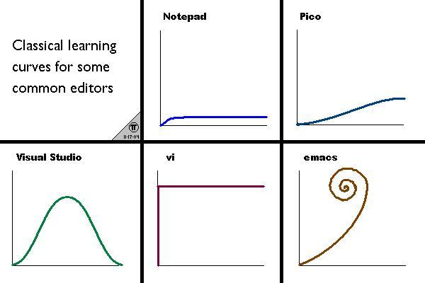

编辑器只有两种，一种是vi/vim，一种是emacs，一种全部归类为其他 --wikipedia
vi/vim在类Unix的世界里面，是一个功能非常强大的编辑器，有人喜欢emacs有人喜欢vi/vim，展开了编辑器之战；当然我并不是要比较这两个编辑器之间的差异，而是要找到一个顺手的编辑器； 编辑器的主要目的是为了提供效率，vi/vim就是为此而生，这就是我喜欢它的原因；
编辑器的学习曲线：

一旦掌握了vi/vim之后效率明显提升很多；
当然vim的配置文件就非常重要了；
作为python的主力编辑器，需要配置语法高亮，自动缩进等等，但我没有配置代码提示，有人说代码提示提高效率，但对于我刚转到python语言来的人来说，这会让我不能很好的掌握它，编写javascript也是一样，不用代码提示，当然等一定的时候，效率的确是瓶颈了，再考虑是否加上代码提示；
使用已经在github上的配置文件
$ git clone https://github.com/ygmpkk/vim.git ~/.vim $ ~/.vim/install.sh
安装完成之后再配置编辑文件的编码
vim ~/.vimrc加入
set encoding=utf-8
vim的详细配置与快捷键参考这里
Comments !